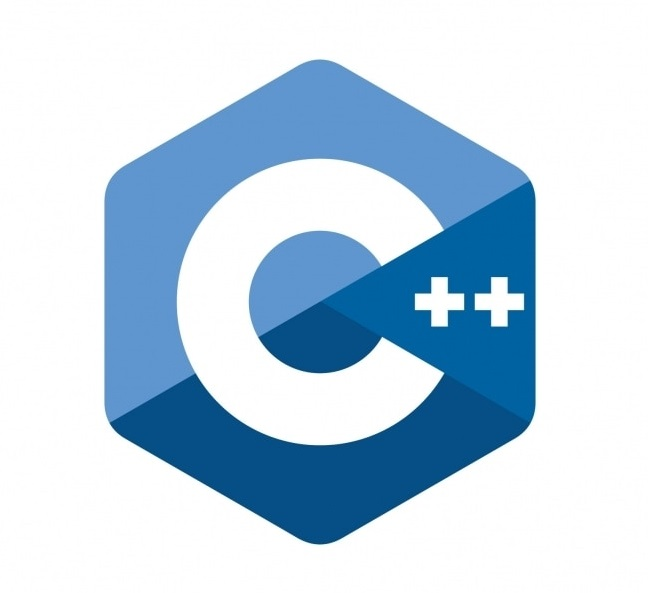

Technologies & Tools



M.Tech in Vision and Intelligent Systems, IIT KGP | AI/ML Researcher | Computer Vision Enthusiast | Developer | Researcher |
I am a passionate researcher and engineer specializing in Vision and Intelligent Systems at IIT Kharagpur. With a strong foundation in Embedded Systems, Machine Learning, and Computer Vision, I have worked on diverse projects ranging from real-time wake word detection to high-efficiency image compression.
My expertise spans C, C++, Embedded C, RTOS, and microcontroller programming, along with frameworks like TensorFlow Lite, OpenCV, and Keras.
Currently, my M.Tech. thesis focuses on network inference, where I am developing an algorithm to construct Boolean Networks from a given transition probability matrix using optimization and dimensionality reduction techniques.
Additionally, I serve as a Teaching Assistant (TA) for Image and Video Processing and Basic Electronics Labs at IIT Kharagpur.
I am driven by a keen interest in embedded machine learning, real-time systems, and efficient algorithm design, constantly exploring ways to bridge the gap between hardware and AI for real-world applications.
Check out my projects, publications, and latest updates!
📧 Email: skar0276@gmail.com
🌐 LinkedIn: linkedin.com/in/Soumyadip-Kar
📞 Phone: +91 8927019480